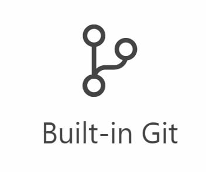
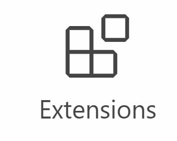
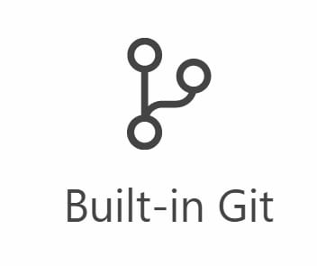
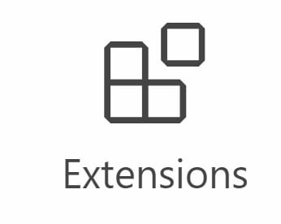
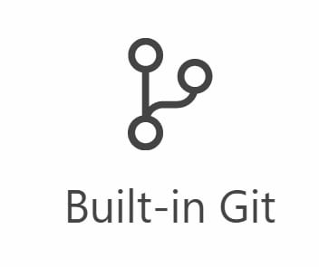
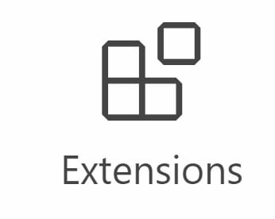

Learning Purpose
version 1.77 is now available! Read about the new features and fixes from March.
Free. Built on open source. Runs everywhere.
Web,Insiders edition, Or Other platforms
By using VS Code, you agree to its
license and privacy statement.



Pav Kod
VS @code does so many things right. I’m constantly impressed by the UX, and customizing workspace / user preferences is no exception. 🙌🏼💯 It just keeps getting better ❤️

Un Vets
VS Code will have deep remote development. You can connect to a container running a different OS and use any VS Code plugins, linting, debugging for that environment. 🔥🔥🔥

John Lap
VS Code is my most used and favorite editor. I love being able to customize the editor - changing the layout, the icons, fonts and color scheme is so easy!
Go beyond syntax highlighting and autocomplete with IntelliSense, which
provides smart completions based on variable types, function definitions, and
imported modules.
Debug code right from the editor. Launch or attach to your running apps and
debug with break points, call stacks, and an interactive console.

Want even more features? Install extensions to add new languages, themes,
debuggers, and to connect to additional services. Extensions run in separate
processes, ensuring they won't slow down your editor. Learn more about
extensions .
With Microsoft Azure you can deploy and host your React, Angular, Vue, Node,
Python (and more!) sites, store and query relational and document based data,
and scale with serverless computing, all with ease, all from within VS Code.
and many more languages on the Marketplace...
Get the Insiders build instead.
GitHub, Azure Repos, and local files.
By downloading and using Visual Studio Code, you agree to the license terms and privacy statement. VS Code
automatically sends telemetry data and crash dumps to help us improve the product. If you would prefer not
to have this data sent please go see How to Disable Crash Reporting to learn how to disable it.